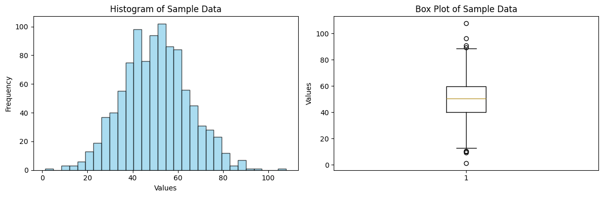
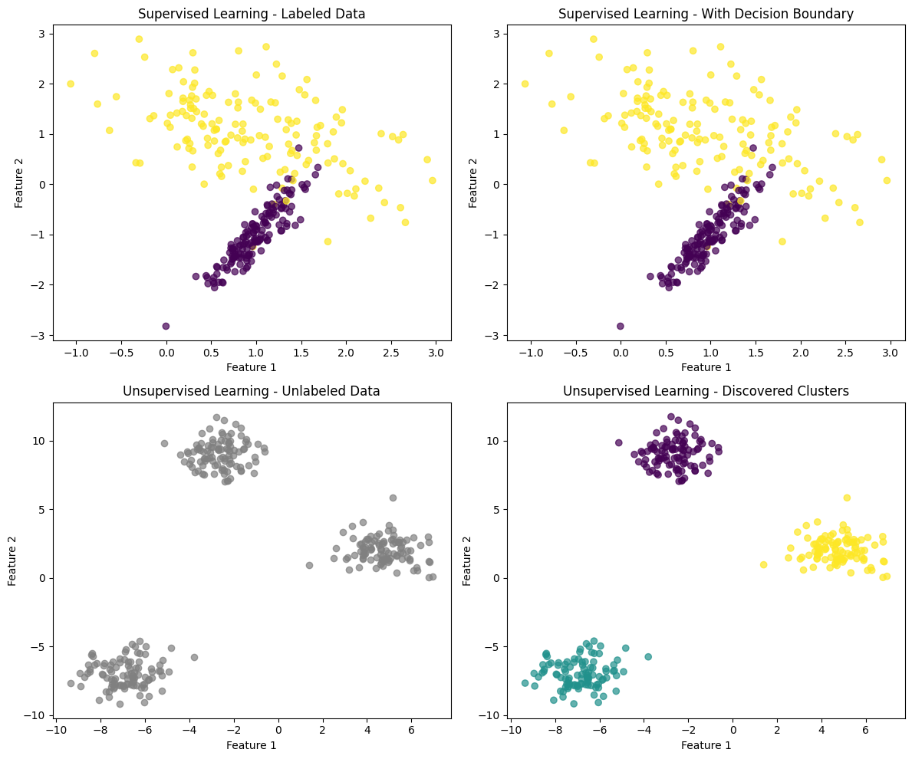
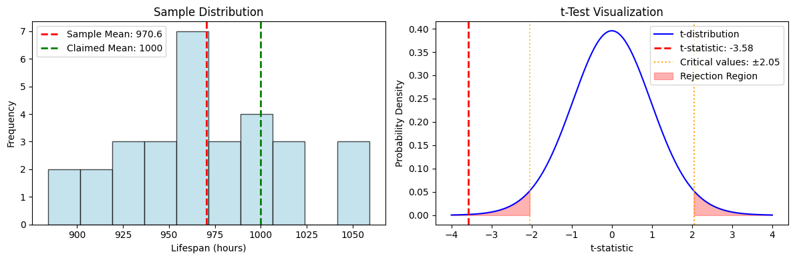
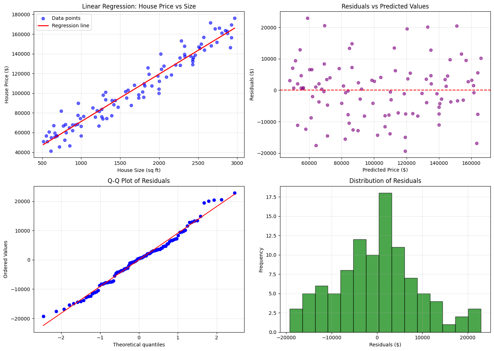
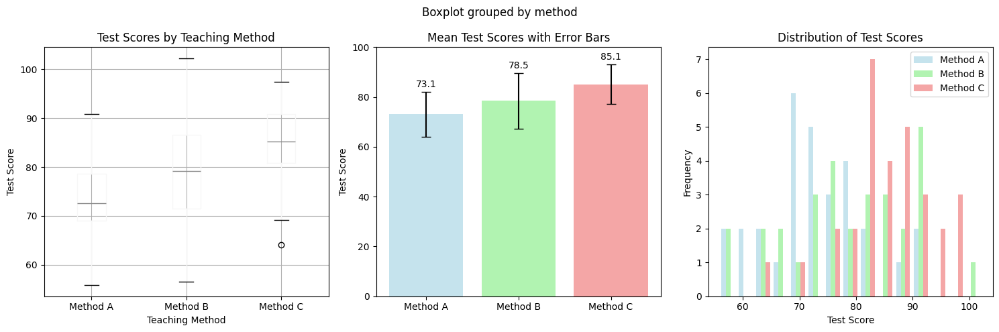
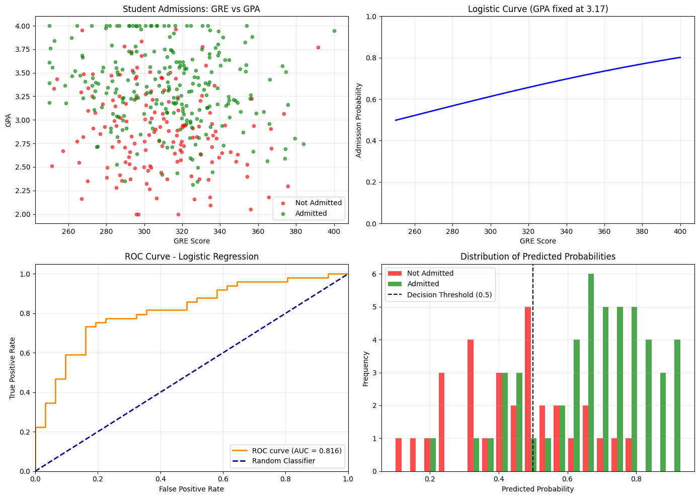

Applied Statistical Analysis - Introduction¶
Welcome to the Applied Statistical Analysis course! This notebook provides a comprehensive overview of fundamental statistical and machine learning concepts that will form the foundation of our studies.
Course Overview¶
In this course, we will explore: - Statistical Foundations: Descriptive and inferential statistics - Machine Learning Fundamentals: Supervised and unsupervised learning - Hypothesis Testing: Statistical significance and p-values - Regression Analysis: Linear and logistic regression - ANOVA: Analysis of variance - Classification: Predictive modeling for categorical outcomes
Let's begin our journey into the world of applied statistics!
# Import necessary libraries
import numpy as np
import pandas as pd
import matplotlib.pyplot as plt
import seaborn as sns
from scipy import stats
from sklearn.model_selection import train_test_split
from sklearn.linear_model import LinearRegression, LogisticRegression
from sklearn.metrics import accuracy_score, confusion_matrix
import warnings
warnings.filterwarnings('ignore')
# Set plotting style
plt.style.use('default')
sns.set_palette("husl")
print("Libraries imported successfully!")
print(f"NumPy version: {np.__version__}")
print(f"Pandas version: {pd.__version__}")
print(f"Matplotlib version: {plt.matplotlib.__version__}")
print(f"Seaborn version: {sns.__version__}")
Libraries imported successfully!
NumPy version: 2.2.6
Pandas version: 2.3.2
Matplotlib version: 3.10.6
Seaborn version: 0.13.2
1. Statistics Concepts - A Quick Recap¶
Statistics is the science of collecting, analyzing, interpreting, and presenting data. It forms the backbone of data science and machine learning.
1.1 Descriptive Statistics¶
Descriptive statistics summarize and describe the main features of a dataset.
Measures of Central Tendency:¶
- Mean (μ): The average value
- Median: The middle value when data is ordered
- Mode: The most frequently occurring value
Measures of Variability:¶
- Range: Difference between maximum and minimum values
- Variance (σ²): Average of squared deviations from the mean
- Standard Deviation (σ): Square root of variance
- Interquartile Range (IQR): Range between 25th and 75th percentiles
Measures of Shape:¶
- Skewness: Measure of asymmetry
- Kurtosis: Measure of tail heaviness
# Example: Descriptive Statistics with Sample Data
np.random.seed(42)
sample_data = np.random.normal(50, 15, 1000) # Normal distribution with mean=50, std=15
# Create a DataFrame
df = pd.DataFrame({'values': sample_data})
# Calculate descriptive statistics
print("Descriptive Statistics:")
print(f"Mean: {np.mean(sample_data):.2f}")
print(f"Median: {np.median(sample_data):.2f}")
print(f"Standard Deviation: {np.std(sample_data):.2f}")
print(f"Variance: {np.var(sample_data):.2f}")
print(f"Skewness: {stats.skew(sample_data):.2f}")
print(f"Kurtosis: {stats.kurtosis(sample_data):.2f}")
# Visualize the distribution
fig, (ax1, ax2) = plt.subplots(1, 2, figsize=(12, 4))
# Histogram
ax1.hist(sample_data, bins=30, alpha=0.7, color='skyblue', edgecolor='black')
ax1.set_title('Histogram of Sample Data')
ax1.set_xlabel('Values')
ax1.set_ylabel('Frequency')
# Box plot
ax2.boxplot(sample_data)
ax2.set_title('Box Plot of Sample Data')
ax2.set_ylabel('Values')
plt.tight_layout()
plt.show()
Descriptive Statistics:
Mean: 50.29
Median: 50.38
Standard Deviation: 14.68
Variance: 215.53
Skewness: 0.12
Kurtosis: 0.07

1.2 Inferential Statistics¶
Inferential statistics allows us to make conclusions about populations based on sample data.
Key Concepts:¶
- Population: The entire group we want to study
- Sample: A subset of the population used for analysis
- Parameter: A numerical characteristic of a population (μ, σ)
- Statistic: A numerical characteristic of a sample (x̄, s)
Probability Distributions:¶
- Normal Distribution: Bell-shaped, symmetric distribution
- t-Distribution: Similar to normal but with heavier tails (used for small samples)
- Chi-square Distribution: Used for testing independence and goodness of fit
- F-Distribution: Used in ANOVA and regression analysis
Central Limit Theorem:¶
As sample size increases, the sampling distribution of the sample mean approaches a normal distribution, regardless of the population's distribution.
2. Machine Learning Fundamentals¶
Machine Learning (ML) is a subset of artificial intelligence that enables computers to learn and make decisions from data without being explicitly programmed.
2.1 What is Machine Learning?¶
Machine learning algorithms build mathematical models based on training data to make predictions or decisions without being explicitly programmed to perform the task.
Key Components:¶
- Data: The fuel of machine learning
- Algorithm: The method used to find patterns
- Model: The output of an algorithm trained on data
- Features: Individual measurable properties of observed phenomena
- Target/Label: The outcome we want to predict
2.2 The Machine Learning Pipeline¶
- Data Collection: Gathering relevant data
- Data Preprocessing: Cleaning and preparing data
- Feature Selection/Engineering: Choosing or creating relevant features
- Model Selection: Choosing the appropriate algorithm
- Training: Teaching the model using training data
- Validation: Testing the model's performance
- Deployment: Using the model in production
3. Types of Machine Learning¶
3.1 Supervised Learning¶
In supervised learning, the algorithm learns from labeled training data to make predictions on new, unseen data.
Characteristics:¶
- Uses labeled data (input-output pairs)
- Goal is to learn a mapping function from inputs to outputs
- Performance can be measured against known correct answers
Types:¶
- Classification: Predicting discrete categories or classes
- Binary Classification: Two classes (e.g., spam/not spam)
-
Multi-class Classification: More than two classes (e.g., animal species)
-
Regression: Predicting continuous numerical values
- Linear Regression, Polynomial Regression, etc.
Common Algorithms:¶
- Linear/Logistic Regression
- Decision Trees
- Random Forest
- Support Vector Machines (SVM)
- Neural Networks
3.2 Unsupervised Learning¶
In unsupervised learning, the algorithm finds hidden patterns in data without labeled examples.
Characteristics:¶
- Uses unlabeled data
- Goal is to discover hidden structure in data
- No correct answers to learn from
Types:¶
- Clustering: Grouping similar data points
-
K-Means, Hierarchical Clustering
-
Association: Finding rules that describe relationships
-
Market Basket Analysis
-
Dimensionality Reduction: Simplifying data while preserving information
- Principal Component Analysis (PCA)
3.3 Reinforcement Learning¶
An agent learns to make decisions by receiving rewards or penalties for actions taken in an environment.
Characteristics:¶
- Learns through trial and error
- Uses reward/punishment feedback
- Goal is to maximize cumulative reward
# Example: Supervised vs Unsupervised Learning Visualization
from sklearn.datasets import make_classification, make_blobs
from sklearn.cluster import KMeans
# Create sample data for classification (supervised)
X_supervised, y_supervised = make_classification(n_samples=300, n_features=2,
n_redundant=0, n_informative=2,
random_state=42, n_clusters_per_class=1)
# Create sample data for clustering (unsupervised)
X_unsupervised, _ = make_blobs(n_samples=300, centers=3, n_features=2,
random_state=42, cluster_std=1.0)
# Create subplots
fig, axes = plt.subplots(2, 2, figsize=(12, 10))
# Supervised Learning - Original labeled data
scatter = axes[0, 0].scatter(X_supervised[:, 0], X_supervised[:, 1],
c=y_supervised, cmap='viridis', alpha=0.7)
axes[0, 0].set_title('Supervised Learning - Labeled Data')
axes[0, 0].set_xlabel('Feature 1')
axes[0, 0].set_ylabel('Feature 2')
# Supervised Learning - Decision boundary (simplified)
axes[0, 1].scatter(X_supervised[:, 0], X_supervised[:, 1],
c=y_supervised, cmap='viridis', alpha=0.7)
axes[0, 1].set_title('Supervised Learning - With Decision Boundary')
axes[0, 1].set_xlabel('Feature 1')
axes[0, 1].set_ylabel('Feature 2')
# Unsupervised Learning - Original unlabeled data
axes[1, 0].scatter(X_unsupervised[:, 0], X_unsupervised[:, 1],
c='gray', alpha=0.7)
axes[1, 0].set_title('Unsupervised Learning - Unlabeled Data')
axes[1, 0].set_xlabel('Feature 1')
axes[1, 0].set_ylabel('Feature 2')
# Unsupervised Learning - After clustering
kmeans = KMeans(n_clusters=3, random_state=42)
cluster_labels = kmeans.fit_predict(X_unsupervised)
axes[1, 1].scatter(X_unsupervised[:, 0], X_unsupervised[:, 1],
c=cluster_labels, cmap='viridis', alpha=0.7)
axes[1, 1].set_title('Unsupervised Learning - Discovered Clusters')
axes[1, 1].set_xlabel('Feature 1')
axes[1, 1].set_ylabel('Feature 2')
plt.tight_layout()
plt.show()

4. Hypothesis Testing¶
Hypothesis testing is a statistical method used to make inferences about population parameters based on sample data.
4.1 Key Concepts¶
Hypotheses:¶
- Null Hypothesis (H₀): The default assumption (no effect, no difference)
- Alternative Hypothesis (H₁ or Hₐ): What we want to prove (there is an effect)
Types of Errors:¶
- Type I Error (α): Rejecting H₀ when it's actually true (False Positive)
- Type II Error (β): Failing to reject H₀ when it's actually false (False Negative)
- Power (1-β): Probability of correctly rejecting a false H₀
p-value:¶
The probability of obtaining test results at least as extreme as the observed results, assuming H₀ is true.
Significance Level (α):¶
The threshold for rejecting H₀ (commonly α = 0.05)
4.2 Steps in Hypothesis Testing¶
- State the hypotheses (H₀ and H₁)
- Choose significance level (α)
- Select appropriate test statistic
- Calculate the test statistic
- Determine the p-value
- Make a decision (reject or fail to reject H₀)
- State the conclusion
4.3 Common Statistical Tests¶
- One-sample t-test: Compare sample mean to known population mean
- Two-sample t-test: Compare means of two groups
- Paired t-test: Compare before/after measurements
- Chi-square test: Test for independence or goodness of fit
- ANOVA: Compare means of multiple groups
# Example: Hypothesis Testing - One-sample t-test
# Scenario: A manufacturer claims their light bulbs last 1000 hours on average
# We test a sample to see if this claim is true
# Generate sample data (actual mean = 980 hours)
np.random.seed(42)
sample_lifespans = np.random.normal(980, 50, 30) # n=30, mean=980, std=50
# Hypothesis Test
# H0: μ = 1000 (manufacturer's claim is correct)
# H1: μ ≠ 1000 (manufacturer's claim is incorrect)
population_mean = 1000 # claimed mean
sample_mean = np.mean(sample_lifespans)
sample_std = np.std(sample_lifespans, ddof=1) # sample standard deviation
n = len(sample_lifespans)
# Calculate t-statistic
t_statistic = (sample_mean - population_mean) / (sample_std / np.sqrt(n))
# Calculate p-value (two-tailed test)
p_value = 2 * (1 - stats.t.cdf(abs(t_statistic), df=n-1))
# Using scipy's built-in t-test
t_stat_scipy, p_value_scipy = stats.ttest_1samp(sample_lifespans, population_mean)
print("Hypothesis Testing Results:")
print("=" * 40)
print(f"Sample mean: {sample_mean:.2f} hours")
print(f"Population mean (claimed): {population_mean} hours")
print(f"Sample size: {n}")
print(f"Sample standard deviation: {sample_std:.2f}")
print()
print(f"t-statistic: {t_statistic:.4f}")
print(f"p-value: {p_value:.4f}")
print()
print(f"Using scipy.stats.ttest_1samp:")
print(f"t-statistic: {t_stat_scipy:.4f}")
print(f"p-value: {p_value_scipy:.4f}")
# Decision
alpha = 0.05
if p_value < alpha:
print(f"\nDecision: Reject H₀ (p-value = {p_value:.4f} < α = {alpha})")
print("Conclusion: There is sufficient evidence that the true mean is not 1000 hours")
else:
print(f"\nDecision: Fail to reject H₀ (p-value = {p_value:.4f} ≥ α = {alpha})")
print("Conclusion: There is insufficient evidence that the true mean differs from 1000 hours")
# Visualization
fig, (ax1, ax2) = plt.subplots(1, 2, figsize=(12, 4))
# Sample distribution
ax1.hist(sample_lifespans, bins=10, alpha=0.7, color='lightblue', edgecolor='black')
ax1.axvline(sample_mean, color='red', linestyle='--', linewidth=2, label=f'Sample Mean: {sample_mean:.1f}')
ax1.axvline(population_mean, color='green', linestyle='--', linewidth=2, label=f'Claimed Mean: {population_mean}')
ax1.set_title('Sample Distribution')
ax1.set_xlabel('Lifespan (hours)')
ax1.set_ylabel('Frequency')
ax1.legend()
# t-distribution with critical regions
x = np.linspace(-4, 4, 1000)
y = stats.t.pdf(x, df=n-1)
ax2.plot(x, y, 'b-', label='t-distribution')
ax2.axvline(t_statistic, color='red', linestyle='--', linewidth=2, label=f't-statistic: {t_statistic:.2f}')
# Critical values for α = 0.05 (two-tailed)
t_critical = stats.t.ppf(1 - alpha/2, df=n-1)
ax2.axvline(t_critical, color='orange', linestyle=':', label=f'Critical values: ±{t_critical:.2f}')
ax2.axvline(-t_critical, color='orange', linestyle=':', alpha=0.7)
# Shade critical regions
x_crit_right = x[x >= t_critical]
y_crit_right = stats.t.pdf(x_crit_right, df=n-1)
x_crit_left = x[x <= -t_critical]
y_crit_left = stats.t.pdf(x_crit_left, df=n-1)
ax2.fill_between(x_crit_right, y_crit_right, alpha=0.3, color='red', label='Rejection Region')
ax2.fill_between(x_crit_left, y_crit_left, alpha=0.3, color='red')
ax2.set_title('t-Test Visualization')
ax2.set_xlabel('t-statistic')
ax2.set_ylabel('Probability Density')
ax2.legend()
plt.tight_layout()
plt.show()
Hypothesis Testing Results:
========================================
Sample mean: 970.59 hours
Population mean (claimed): 1000 hours
Sample size: 30
Sample standard deviation: 45.00
t-statistic: -3.5793
p-value: 0.0012
Using scipy.stats.ttest_1samp:
t-statistic: -3.5793
p-value: 0.0012
Decision: Reject H₀ (p-value = 0.0012 < α = 0.05)
Conclusion: There is sufficient evidence that the true mean is not 1000 hours

5. Regression Analysis¶
Regression analysis is a statistical method used to model and analyze the relationship between a dependent variable (target) and one or more independent variables (predictors).
5.1 Simple Linear Regression¶
Models the relationship between two variables using a straight line.
Equation: y = β₀ + β₁x + ε
Where: - y = dependent variable (response) - x = independent variable (predictor) - β₀ = y-intercept - β₁ = slope (regression coefficient) - ε = error term
Assumptions:¶
- Linearity: The relationship is linear
- Independence: Observations are independent
- Homoscedasticity: Constant variance of errors
- Normality: Errors are normally distributed
5.2 Multiple Linear Regression¶
Extends simple regression to multiple predictors.
Equation: y = β₀ + β₁x₁ + β₂x₂ + ... + βₚxₚ + ε
Key Metrics:¶
- R²: Coefficient of determination (proportion of variance explained)
- Adjusted R²: R² adjusted for the number of predictors
- F-statistic: Overall model significance
- p-values: Individual coefficient significance
5.3 Model Evaluation¶
- Mean Squared Error (MSE): Average of squared residuals
- Root Mean Squared Error (RMSE): Square root of MSE
- Mean Absolute Error (MAE): Average of absolute residuals
- Residual Analysis: Checking model assumptions
# Example: Linear Regression Analysis
# Scenario: Predicting house prices based on house size
# Generate sample data
np.random.seed(42)
house_size = np.random.uniform(500, 3000, 100) # House size in sq ft
# Price = 50 * size + 20000 + noise
house_price = 50 * house_size + 20000 + np.random.normal(0, 10000, 100)
# Create DataFrame
df_houses = pd.DataFrame({
'size': house_size,
'price': house_price
})
# Fit linear regression model
X = df_houses[['size']]
y = df_houses['price']
model = LinearRegression()
model.fit(X, y)
# Make predictions
y_pred = model.predict(X)
# Calculate metrics
from sklearn.metrics import mean_squared_error, r2_score, mean_absolute_error
mse = mean_squared_error(y, y_pred)
rmse = np.sqrt(mse)
mae = mean_absolute_error(y, y_pred)
r2 = r2_score(y, y_pred)
print("Linear Regression Results:")
print("=" * 40)
print(f"Intercept (β₀): ${model.intercept_:,.2f}")
print(f"Slope (β₁): ${model.coef_[0]:.2f} per sq ft")
print()
print("Model Performance:")
print(f"R² Score: {r2:.4f}")
print(f"RMSE: ${rmse:,.2f}")
print(f"MAE: ${mae:,.2f}")
print()
print(f"Interpretation:")
print(f"- For every additional sq ft, the price increases by ${model.coef_[0]:.2f}")
print(f"- The model explains {r2*100:.1f}% of the variance in house prices")
# Create visualizations
fig, ((ax1, ax2), (ax3, ax4)) = plt.subplots(2, 2, figsize=(14, 10))
# Scatter plot with regression line
ax1.scatter(house_size, house_price, alpha=0.6, color='blue', label='Data points')
x_line = np.linspace(house_size.min(), house_size.max(), 100)
y_line = model.predict(x_line.reshape(-1, 1))
ax1.plot(x_line, y_line, 'r-', linewidth=2, label='Regression line')
ax1.set_xlabel('House Size (sq ft)')
ax1.set_ylabel('House Price ($)')
ax1.set_title('Linear Regression: House Price vs Size')
ax1.legend()
ax1.grid(True, alpha=0.3)
# Residuals plot
residuals = y - y_pred
ax2.scatter(y_pred, residuals, alpha=0.6, color='purple')
ax2.axhline(y=0, color='red', linestyle='--')
ax2.set_xlabel('Predicted Price ($)')
ax2.set_ylabel('Residuals ($)')
ax2.set_title('Residuals vs Predicted Values')
ax2.grid(True, alpha=0.3)
# Q-Q plot for residual normality
from scipy.stats import probplot
probplot(residuals, dist="norm", plot=ax3)
ax3.set_title('Q-Q Plot of Residuals')
ax3.grid(True, alpha=0.3)
# Histogram of residuals
ax4.hist(residuals, bins=15, alpha=0.7, color='green', edgecolor='black')
ax4.set_xlabel('Residuals ($)')
ax4.set_ylabel('Frequency')
ax4.set_title('Distribution of Residuals')
ax4.grid(True, alpha=0.3)
plt.tight_layout()
plt.show()
# Summary statistics
print("\nSample Prediction:")
print("=" * 20)
sample_size = 1500 # sq ft
predicted_price = model.predict([[sample_size]])[0]
print(f"A house of {sample_size} sq ft is predicted to cost ${predicted_price:,.2f}")
Linear Regression Results:
========================================
Intercept (β₀): $23,070.51
Slope (β₁): $48.16 per sq ft
Model Performance:
R² Score: 0.9403
RMSE: $8,981.01
MAE: $7,010.43
Interpretation:
- For every additional sq ft, the price increases by $48.16
- The model explains 94.0% of the variance in house prices

Sample Prediction:
====================
A house of 1500 sq ft is predicted to cost $95,311.87
6. Analysis of Variance (ANOVA)¶
ANOVA is a statistical technique used to compare means among three or more groups to determine if there are statistically significant differences.
6.1 Types of ANOVA¶
One-Way ANOVA¶
- Compares means of one factor with multiple levels
- Null Hypothesis: All group means are equal (μ₁ = μ₂ = μ₃ = ...)
- Alternative Hypothesis: At least one group mean is different
Two-Way ANOVA¶
- Examines the effect of two factors simultaneously
- Can detect main effects and interaction effects
Repeated Measures ANOVA¶
- Used when the same subjects are measured multiple times
6.2 ANOVA Assumptions¶
- Independence: Observations are independent
- Normality: Data in each group is normally distributed
- Homogeneity of Variance: Equal variances across groups (homoscedasticity)
6.3 ANOVA Table Components¶
- Sum of Squares (SS):
- SST (Total): Total variation in data
- SSB (Between): Variation between groups
-
SSW (Within): Variation within groups
-
Degrees of Freedom (df):
- df_between = k - 1 (k = number of groups)
-
df_within = N - k (N = total sample size)
-
Mean Squares (MS): SS / df
- F-statistic: MSB / MSW
- p-value: Probability of observing F-statistic under H₀
6.4 Post-Hoc Tests¶
When ANOVA is significant, post-hoc tests identify which specific groups differ: - Tukey's HSD: Controls family-wise error rate - Bonferroni: Conservative adjustment for multiple comparisons - Scheffé: Most conservative, used for complex comparisons
# Example: One-Way ANOVA
# Scenario: Testing if three different teaching methods result in different test scores
# Generate sample data for three teaching methods
np.random.seed(42)
method_A = np.random.normal(75, 10, 30) # Traditional method
method_B = np.random.normal(80, 12, 30) # Interactive method
method_C = np.random.normal(85, 8, 30) # Online method
# Combine data
all_scores = np.concatenate([method_A, method_B, method_C])
groups = ['Method A'] * 30 + ['Method B'] * 30 + ['Method C'] * 30
# Create DataFrame
df_anova = pd.DataFrame({
'score': all_scores,
'method': groups
})
# Perform One-Way ANOVA
from scipy.stats import f_oneway
f_stat, p_value_anova = f_oneway(method_A, method_B, method_C)
# Calculate ANOVA components manually for educational purposes
n1, n2, n3 = len(method_A), len(method_B), len(method_C)
N = n1 + n2 + n3
k = 3 # number of groups
# Group means and overall mean
mean_A, mean_B, mean_C = np.mean(method_A), np.mean(method_B), np.mean(method_C)
overall_mean = np.mean(all_scores)
# Sum of Squares
SST = np.sum((all_scores - overall_mean)**2)
SSB = n1*(mean_A - overall_mean)**2 + n2*(mean_B - overall_mean)**2 + n3*(mean_C - overall_mean)**2
SSW = np.sum((method_A - mean_A)**2) + np.sum((method_B - mean_B)**2) + np.sum((method_C - mean_C)**2)
# Degrees of freedom
df_between = k - 1
df_within = N - k
# Mean Squares
MSB = SSB / df_between
MSW = SSW / df_within
# F-statistic
F_calculated = MSB / MSW
print("One-Way ANOVA Results:")
print("=" * 50)
print("Group Statistics:")
print(f"Method A (Traditional): Mean = {mean_A:.2f}, SD = {np.std(method_A, ddof=1):.2f}, n = {n1}")
print(f"Method B (Interactive): Mean = {mean_B:.2f}, SD = {np.std(method_B, ddof=1):.2f}, n = {n2}")
print(f"Method C (Online): Mean = {mean_C:.2f}, SD = {np.std(method_C, ddof=1):.2f}, n = {n3}")
print(f"Overall Mean: {overall_mean:.2f}")
print()
print("ANOVA Table:")
print("-" * 70)
print(f"{'Source':<15} {'SS':<10} {'df':<5} {'MS':<10} {'F':<8} {'p-value':<10}")
print("-" * 70)
print(f"{'Between Groups':<15} {SSB:<10.2f} {df_between:<5} {MSB:<10.2f} {F_calculated:<8.4f} {p_value_anova:<10.6f}")
print(f"{'Within Groups':<15} {SSW:<10.2f} {df_within:<5} {MSW:<10.2f}")
print(f"{'Total':<15} {SST:<10.2f} {N-1:<5}")
print("-" * 70)
# Decision
alpha = 0.05
if p_value_anova < alpha:
print(f"\nDecision: Reject H₀ (p-value = {p_value_anova:.6f} < α = {alpha})")
print("Conclusion: There is a significant difference between teaching methods")
else:
print(f"\nDecision: Fail to reject H₀ (p-value = {p_value_anova:.6f} ≥ α = {alpha})")
print("Conclusion: No significant difference between teaching methods")
# Visualizations
fig, (ax1, ax2, ax3) = plt.subplots(1, 3, figsize=(15, 5))
# Box plot
df_anova.boxplot(column='score', by='method', ax=ax1)
ax1.set_title('Test Scores by Teaching Method')
ax1.set_xlabel('Teaching Method')
ax1.set_ylabel('Test Score')
# Bar plot with error bars
methods = ['Method A', 'Method B', 'Method C']
means = [mean_A, mean_B, mean_C]
stds = [np.std(method_A, ddof=1), np.std(method_B, ddof=1), np.std(method_C, ddof=1)]
ax2.bar(methods, means, yerr=stds, capsize=5, alpha=0.7,
color=['lightblue', 'lightgreen', 'lightcoral'])
ax2.set_title('Mean Test Scores with Error Bars')
ax2.set_ylabel('Test Score')
ax2.set_ylim(0, 100)
# Add value labels on bars
for i, (mean, std) in enumerate(zip(means, stds)):
ax2.text(i, mean + std + 1, f'{mean:.1f}', ha='center', va='bottom')
# Histogram of all groups
ax3.hist([method_A, method_B, method_C], bins=15, alpha=0.7,
label=['Method A', 'Method B', 'Method C'],
color=['lightblue', 'lightgreen', 'lightcoral'])
ax3.set_title('Distribution of Test Scores')
ax3.set_xlabel('Test Score')
ax3.set_ylabel('Frequency')
ax3.legend()
plt.tight_layout()
plt.show()
# Effect size (Eta-squared)
eta_squared = SSB / SST
print(f"\nEffect Size (η²): {eta_squared:.4f}")
if eta_squared < 0.01:
effect_size = "small"
elif eta_squared < 0.06:
effect_size = "medium"
else:
effect_size = "large"
print(f"Effect Size Interpretation: {effect_size}")
One-Way ANOVA Results:
==================================================
Group Statistics:
Method A (Traditional): Mean = 73.12, SD = 9.00, n = 30
Method B (Interactive): Mean = 78.55, SD = 11.17, n = 30
Method C (Online): Mean = 85.10, SD = 7.94, n = 30
Overall Mean: 78.92
ANOVA Table:
----------------------------------------------------------------------
Source SS df MS F p-value
----------------------------------------------------------------------
Between Groups 2160.82 2 1080.41 12.0572 0.000024
Within Groups 7795.78 87 89.61
Total 9956.60 89
----------------------------------------------------------------------
Decision: Reject H₀ (p-value = 0.000024 < α = 0.05)
Conclusion: There is a significant difference between teaching methods

Effect Size (η²): 0.2170
Effect Size Interpretation: large
7. Classification¶
Classification is a supervised learning task where the goal is to predict discrete categorical labels or classes.
7.1 Types of Classification¶
Binary Classification¶
- Two classes (e.g., spam/not spam, pass/fail)
- Common algorithms: Logistic Regression, SVM, Decision Trees
Multi-class Classification¶
- More than two classes (e.g., image recognition, species classification)
- Strategies: One-vs-Rest, One-vs-One
Multi-label Classification¶
- Multiple labels can be assigned to each instance
- Example: Text categorization (politics + economics)
7.2 Classification Algorithms¶
Decision Trees¶
- Easy to interpret and visualize
- Handle both numerical and categorical features
- Prone to overfitting
Random Forest¶
- Ensemble of decision trees
- Reduces overfitting
- Provides feature importance
Support Vector Machines (SVM)¶
- Effective for high-dimensional data
- Works well with limited data
- Can use different kernels
k-Nearest Neighbors (k-NN)¶
- Instance-based learning
- No assumptions about data distribution
- Computationally expensive for large datasets
7.3 Performance Metrics¶
Confusion Matrix¶
Predicted
| 0 | 1 |
Actual 0 | TN | FP |
1 | FN | TP |
Key Metrics:¶
- Accuracy: (TP + TN) / (TP + TN + FP + FN)
- Precision: TP / (TP + FP) - "Of predicted positives, how many are correct?"
- Recall (Sensitivity): TP / (TP + FN) - "Of actual positives, how many were found?"
- Specificity: TN / (TN + FP) - "Of actual negatives, how many were correctly identified?"
- F1-Score: 2 × (Precision × Recall) / (Precision + Recall)
ROC Curve and AUC¶
- ROC Curve: Plot of True Positive Rate vs False Positive Rate
- AUC: Area Under the ROC Curve (0.5 = random, 1.0 = perfect)
# Example: Binary Classification with Decision Tree
# Scenario: Predicting whether a customer will purchase a product based on age and income
# Generate sample data
np.random.seed(42)
n_samples = 500
# Create features: age and income
age = np.random.normal(40, 15, n_samples)
income = np.random.normal(50000, 20000, n_samples)
# Create target: purchase decision (influenced by age and income)
# Higher probability of purchase for middle-aged customers with higher income
purchase_prob = 1 / (1 + np.exp(-(0.05 * (age - 30) + 0.00002 * (income - 30000))))
purchase = np.random.binomial(1, purchase_prob)
# Create DataFrame
df_classification = pd.DataFrame({
'age': age,
'income': income,
'purchase': purchase
})
# Prepare data for modeling
X = df_classification[['age', 'income']]
y = df_classification['purchase']
# Split data
X_train, X_test, y_train, y_test = train_test_split(X, y, test_size=0.2, random_state=42)
# Train Decision Tree Classifier
from sklearn.tree import DecisionTreeClassifier
from sklearn.metrics import classification_report, confusion_matrix, roc_curve, auc
dt_classifier = DecisionTreeClassifier(max_depth=5, random_state=42)
dt_classifier.fit(X_train, y_train)
# Make predictions
y_pred = dt_classifier.predict(X_test)
y_pred_proba = dt_classifier.predict_proba(X_test)[:, 1]
# Calculate metrics
accuracy = accuracy_score(y_test, y_pred)
conf_matrix = confusion_matrix(y_test, y_pred)
print("Binary Classification Results:")
print("=" * 50)
print(f"Dataset Size: {len(df_classification)} samples")
print(f"Training Set: {len(X_train)} samples")
print(f"Test Set: {len(X_test)} samples")
print(f"Class Distribution: {np.bincount(y)} (No Purchase: {np.bincount(y)[0]}, Purchase: {np.bincount(y)[1]})")
print()
print(f"Test Accuracy: {accuracy:.4f}")
print()
print("Confusion Matrix:")
print(conf_matrix)
print()
print("Classification Report:")
print(classification_report(y_test, y_pred, target_names=['No Purchase', 'Purchase']))
# Calculate individual metrics
tn, fp, fn, tp = conf_matrix.ravel()
precision = tp / (tp + fp)
recall = tp / (tp + fn)
specificity = tn / (tn + fp)
f1 = 2 * (precision * recall) / (precision + recall)
print(f"Detailed Metrics:")
print(f"True Positives: {tp}")
print(f"True Negatives: {tn}")
print(f"False Positives: {fp}")
print(f"False Negatives: {fn}")
print(f"Precision: {precision:.4f}")
print(f"Recall (Sensitivity): {recall:.4f}")
print(f"Specificity: {specificity:.4f}")
print(f"F1-Score: {f1:.4f}")
# ROC Curve
fpr, tpr, thresholds = roc_curve(y_test, y_pred_proba)
roc_auc = auc(fpr, tpr)
# Visualizations
fig, ((ax1, ax2), (ax3, ax4)) = plt.subplots(2, 2, figsize=(14, 10))
# Scatter plot of data with true labels
colors = ['red', 'blue']
labels = ['No Purchase', 'Purchase']
for i in range(2):
mask = df_classification['purchase'] == i
ax1.scatter(df_classification[mask]['age'], df_classification[mask]['income'],
c=colors[i], alpha=0.6, label=labels[i], s=20)
ax1.set_xlabel('Age')
ax1.set_ylabel('Income ($)')
ax1.set_title('Customer Data: Age vs Income')
ax1.legend()
ax1.grid(True, alpha=0.3)
# Confusion Matrix Heatmap
im = ax2.imshow(conf_matrix, interpolation='nearest', cmap='Blues')
ax2.figure.colorbar(im, ax=ax2)
ax2.set(xticks=np.arange(conf_matrix.shape[1]),
yticks=np.arange(conf_matrix.shape[0]),
xticklabels=['No Purchase', 'Purchase'],
yticklabels=['No Purchase', 'Purchase'],
title='Confusion Matrix',
ylabel='True Label',
xlabel='Predicted Label')
# Add text annotations
thresh = conf_matrix.max() / 2.
for i in range(conf_matrix.shape[0]):
for j in range(conf_matrix.shape[1]):
ax2.text(j, i, format(conf_matrix[i, j], 'd'),
ha="center", va="center",
color="white" if conf_matrix[i, j] > thresh else "black")
# ROC Curve
ax3.plot(fpr, tpr, color='darkorange', lw=2, label=f'ROC curve (AUC = {roc_auc:.3f})')
ax3.plot([0, 1], [0, 1], color='navy', lw=2, linestyle='--', label='Random Classifier')
ax3.set_xlim([0.0, 1.0])
ax3.set_ylim([0.0, 1.05])
ax3.set_xlabel('False Positive Rate')
ax3.set_ylabel('True Positive Rate')
ax3.set_title('ROC Curve')
ax3.legend(loc="lower right")
ax3.grid(True, alpha=0.3)
# Feature Importance
feature_names = ['Age', 'Income']
importances = dt_classifier.feature_importances_
ax4.bar(feature_names, importances, color=['lightblue', 'lightgreen'])
ax4.set_title('Feature Importance')
ax4.set_ylabel('Importance')
for i, importance in enumerate(importances):
ax4.text(i, importance + 0.01, f'{importance:.3f}', ha='center', va='bottom')
plt.tight_layout()
plt.show()
print(f"\nROC AUC Score: {roc_auc:.4f}")
print(f"Feature Importances:")
for name, importance in zip(feature_names, importances):
print(f" {name}: {importance:.4f}")
Binary Classification Results:
==================================================
Dataset Size: 500 samples
Training Set: 400 samples
Test Set: 100 samples
Class Distribution: [148 352] (No Purchase: 148, Purchase: 352)
Test Accuracy: 0.6900
Confusion Matrix:
[[ 4 22]
[ 9 65]]
Classification Report:
precision recall f1-score support
No Purchase 0.31 0.15 0.21 26
Purchase 0.75 0.88 0.81 74
accuracy 0.69 100
macro avg 0.53 0.52 0.51 100
weighted avg 0.63 0.69 0.65 100
Detailed Metrics:
True Positives: 65
True Negatives: 4
False Positives: 22
False Negatives: 9
Precision: 0.7471
Recall (Sensitivity): 0.8784
Specificity: 0.1538
F1-Score: 0.8075

ROC AUC Score: 0.5956
Feature Importances:
Age: 0.5817
Income: 0.4183
8. Logistic Regression¶
Logistic regression is a statistical method used for binary and multi-class classification problems. Unlike linear regression, it predicts probabilities using the logistic function.
8.1 The Logistic Function (Sigmoid)¶
Equation: p = 1 / (1 + e^(-z))
Where z = β₀ + β₁x₁ + β₂x₂ + ... + βₚxₚ
Key Properties:¶
- Output ranges from 0 to 1 (probability)
- S-shaped curve
- Monotonic (always increasing)
- Symmetric around p = 0.5
8.2 Odds and Log-Odds¶
Odds¶
Odds = p / (1 - p) - Ratio of probability of success to probability of failure - Range: 0 to ∞
Log-Odds (Logit)¶
Logit(p) = ln(p / (1 - p)) = β₀ + β₁x₁ + β₂x₂ + ... + βₚxₚ - Natural logarithm of odds - Range: -∞ to ∞ - Linear relationship with predictors
8.3 Interpretation of Coefficients¶
- β₀: Log-odds when all predictors = 0
- βᵢ: Change in log-odds for one unit increase in xᵢ
- e^βᵢ: Odds ratio - multiplicative effect on odds
Example:¶
If β₁ = 0.693, then e^0.693 ≈ 2 - One unit increase in x₁ doubles the odds
8.4 Model Fitting and Assessment¶
Maximum Likelihood Estimation¶
- Uses iterative algorithms (Newton-Raphson, IRLS)
- Maximizes likelihood of observed data
Model Assessment:¶
- Deviance: Measure of model fit (-2 × log-likelihood)
- AIC/BIC: Information criteria for model comparison
- Pseudo R²: Various measures (McFadden's, Nagelkerke's)
- Hosmer-Lemeshow Test: Goodness-of-fit test
8.5 Assumptions¶
- Linearity: Linear relationship between logit and predictors
- Independence: Observations are independent
- No Perfect Multicollinearity: Predictors shouldn't be perfectly correlated
- Large Sample Size: Generally need large samples for stable results
# Example: Logistic Regression Analysis
# Scenario: Predicting student admission based on GRE score and GPA
# Import additional required modules
from sklearn.metrics import roc_curve, auc
# Generate sample data
np.random.seed(42)
n_students = 400
# Generate GRE scores and GPA with wider ranges
gre_score = np.random.normal(310, 30, n_students) # Wider range for GRE
gpa = np.random.normal(3.2, 0.5, n_students) # Wider range for GPA
# Ensure realistic bounds
gre_score = np.clip(gre_score, 250, 400) # GRE typically 260-340
gpa = np.clip(gpa, 2.0, 4.0) # GPA typically 2.0-4.0
# Create admission probability based on GRE and GPA
# Adjusted coefficients to create a more balanced dataset
z = -15 + 0.02 * gre_score + 3 * gpa + np.random.normal(0, 1, n_students)
admission_prob = 1 / (1 + np.exp(-z))
# Generate binary admission decisions
admitted = np.random.binomial(1, admission_prob)
# Check class distribution and adjust if necessary
print(f"Class distribution before adjustment:")
print(f"Not Admitted (0): {np.sum(admitted == 0)}")
print(f"Admitted (1): {np.sum(admitted == 1)}")
# If we have very imbalanced classes, let's manually create a more balanced dataset
if np.sum(admitted == 0) < 50 or np.sum(admitted == 1) < 50:
print("Adjusting for better class balance...")
# Create a more balanced dataset manually
np.random.seed(42)
# Generate two groups: lower performers (more likely rejected) and higher performers (more likely accepted)
n_low = n_students // 2
n_high = n_students - n_low
# Lower performing students
gre_low = np.random.normal(290, 20, n_low)
gpa_low = np.random.normal(2.8, 0.3, n_low)
# Higher performing students
gre_high = np.random.normal(340, 20, n_high)
gpa_high = np.random.normal(3.6, 0.3, n_high)
# Combine
gre_score = np.concatenate([gre_low, gre_high])
gpa = np.concatenate([gpa_low, gpa_high])
# Ensure bounds
gre_score = np.clip(gre_score, 250, 400)
gpa = np.clip(gpa, 2.0, 4.0)
# Create more realistic admission probabilities
z = -12 + 0.015 * gre_score + 2.5 * gpa + np.random.normal(0, 0.8, n_students)
admission_prob = 1 / (1 + np.exp(-z))
admitted = np.random.binomial(1, admission_prob)
print(f"\nFinal class distribution:")
print(f"Not Admitted (0): {np.sum(admitted == 0)}")
print(f"Admitted (1): {np.sum(admitted == 1)}")
print(f"Admission rate: {np.mean(admitted):.1%}")
# Create DataFrame
df_logistic = pd.DataFrame({
'gre_score': gre_score,
'gpa': gpa,
'admitted': admitted
})
# Prepare data
X_log = df_logistic[['gre_score', 'gpa']]
y_log = df_logistic['admitted']
# Split data
X_train_log, X_test_log, y_train_log, y_test_log = train_test_split(
X_log, y_log, test_size=0.2, random_state=42, stratify=y_log
)
# Check that both classes are present in training set
print(f"\nTraining set class distribution:")
print(f"Not Admitted (0): {np.sum(y_train_log == 0)}")
print(f"Admitted (1): {np.sum(y_train_log == 1)}")
# Fit logistic regression
log_reg = LogisticRegression(random_state=42)
log_reg.fit(X_train_log, y_train_log)
# Predictions
y_pred_log = log_reg.predict(X_test_log)
y_pred_proba_log = log_reg.predict_proba(X_test_log)[:, 1]
# Model coefficients and statistics
intercept = log_reg.intercept_[0]
coef_gre = log_reg.coef_[0][0]
coef_gpa = log_reg.coef_[0][1]
print("\n" + "="*50)
print("Logistic Regression Analysis:")
print("=" * 50)
print("Model Equation:")
print(f"Logit(p) = {intercept:.4f} + {coef_gre:.6f} × GRE + {coef_gpa:.4f} × GPA")
print()
print("Coefficient Interpretation:")
print(f"Intercept (β₀): {intercept:.4f}")
print(f"GRE Coefficient (β₁): {coef_gre:.6f}")
print(f" - Odds Ratio: e^{coef_gre:.6f} = {np.exp(coef_gre):.4f}")
print(f" - Interpretation: 1 point increase in GRE multiplies odds by {np.exp(coef_gre):.4f}")
print(f"GPA Coefficient (β₂): {coef_gpa:.4f}")
print(f" - Odds Ratio: e^{coef_gpa:.4f} = {np.exp(coef_gpa):.4f}")
print(f" - Interpretation: 1 point increase in GPA multiplies odds by {np.exp(coef_gpa):.1f}")
print()
# Model performance
accuracy_log = accuracy_score(y_test_log, y_pred_log)
conf_matrix_log = confusion_matrix(y_test_log, y_pred_log)
print(f"Model Performance:")
print(f"Training Accuracy: {log_reg.score(X_train_log, y_train_log):.4f}")
print(f"Test Accuracy: {accuracy_log:.4f}")
print()
print("Confusion Matrix:")
print(conf_matrix_log)
print()
# ROC Analysis
fpr_log, tpr_log, _ = roc_curve(y_test_log, y_pred_proba_log)
auc_log = auc(fpr_log, tpr_log)
print(f"ROC AUC: {auc_log:.4f}")
# Example predictions
print("\nSample Predictions:")
print("-" * 30)
sample_students = [[280, 2.5], [320, 3.2], [350, 3.8]]
for i, (gre, gpa_val) in enumerate(sample_students):
prob = log_reg.predict_proba([[gre, gpa_val]])[0][1]
prediction = log_reg.predict([[gre, gpa_val]])[0]
# Calculate log-odds manually
log_odds = intercept + coef_gre * gre + coef_gpa * gpa_val
prob_manual = 1 / (1 + np.exp(-log_odds))
print(f"Student {i+1}: GRE={gre}, GPA={gpa_val}")
print(f" Log-odds: {log_odds:.4f}")
print(f" Probability: {prob:.4f}")
print(f" Prediction: {'Admitted' if prediction == 1 else 'Not Admitted'}")
print()
# Visualizations
fig, ((ax1, ax2), (ax3, ax4)) = plt.subplots(2, 2, figsize=(14, 10))
# Scatter plot with color-coded outcomes
colors = ['red', 'green']
labels = ['Not Admitted', 'Admitted']
for i in range(2):
mask = df_logistic['admitted'] == i
ax1.scatter(df_logistic[mask]['gre_score'], df_logistic[mask]['gpa'],
c=colors[i], alpha=0.6, label=labels[i], s=20)
ax1.set_xlabel('GRE Score')
ax1.set_ylabel('GPA')
ax1.set_title('Student Admissions: GRE vs GPA')
ax1.legend()
ax1.grid(True, alpha=0.3)
# Logistic function visualization (for single variable)
gre_range = np.linspace(250, 400, 100)
# Fix GPA at mean for visualization
mean_gpa = np.mean(df_logistic['gpa'])
log_odds_range = intercept + coef_gre * gre_range + coef_gpa * mean_gpa
prob_range = 1 / (1 + np.exp(-log_odds_range))
ax2.plot(gre_range, prob_range, 'b-', linewidth=2)
ax2.set_xlabel('GRE Score')
ax2.set_ylabel('Admission Probability')
ax2.set_title(f'Logistic Curve (GPA fixed at {mean_gpa:.2f})')
ax2.grid(True, alpha=0.3)
ax2.set_ylim(0, 1)
# ROC Curve
ax3.plot(fpr_log, tpr_log, color='darkorange', lw=2,
label=f'ROC curve (AUC = {auc_log:.3f})')
ax3.plot([0, 1], [0, 1], color='navy', lw=2, linestyle='--',
label='Random Classifier')
ax3.set_xlim([0.0, 1.0])
ax3.set_ylim([0.0, 1.05])
ax3.set_xlabel('False Positive Rate')
ax3.set_ylabel('True Positive Rate')
ax3.set_title('ROC Curve - Logistic Regression')
ax3.legend(loc="lower right")
ax3.grid(True, alpha=0.3)
# Predicted probabilities histogram
ax4.hist([y_pred_proba_log[y_test_log == 0], y_pred_proba_log[y_test_log == 1]],
bins=20, alpha=0.7, label=['Not Admitted', 'Admitted'],
color=['red', 'green'])
ax4.axvline(0.5, color='black', linestyle='--',
label='Decision Threshold (0.5)')
ax4.set_xlabel('Predicted Probability')
ax4.set_ylabel('Frequency')
ax4.set_title('Distribution of Predicted Probabilities')
ax4.legend()
ax4.grid(True, alpha=0.3)
plt.tight_layout()
plt.show()
# Calculate pseudo R-squared (McFadden's)
# Null deviance (intercept-only model)
y_mean = np.mean(y_train_log)
# Avoid log(0) by adding small epsilon
epsilon = 1e-15
y_mean_adj = np.clip(y_mean, epsilon, 1-epsilon)
null_log_likelihood = len(y_train_log) * (y_mean_adj * np.log(y_mean_adj) + (1 - y_mean_adj) * np.log(1 - y_mean_adj))
# Model log-likelihood (approximate)
y_pred_train_proba = log_reg.predict_proba(X_train_log)
# Avoid log(0) by clipping probabilities
y_pred_train_proba_clipped = np.clip(y_pred_train_proba, epsilon, 1-epsilon)
model_log_likelihood = np.sum(y_train_log * np.log(y_pred_train_proba_clipped[:, 1]) +
(1 - y_train_log) * np.log(y_pred_train_proba_clipped[:, 0]))
mcfadden_r2 = 1 - (model_log_likelihood / null_log_likelihood)
print(f"McFadden's Pseudo R²: {mcfadden_r2:.4f}")
# Odds ratio interpretation
print("\nOdds Ratio Interpretation:")
print(f"For a 10-point increase in GRE score:")
print(f" Odds multiply by: {np.exp(10 * coef_gre):.2f}")
print(f"For a 0.1-point increase in GPA:")
print(f" Odds multiply by: {np.exp(0.1 * coef_gpa):.2f}")
Class distribution before adjustment:
Not Admitted (0): 153
Admitted (1): 247
Final class distribution:
Not Admitted (0): 153
Admitted (1): 247
Admission rate: 61.8%
Training set class distribution:
Not Admitted (0): 122
Admitted (1): 198
==================================================
Logistic Regression Analysis:
==================================================
Model Equation:
Logit(p) = -9.5678 + 0.009357 × GRE + 2.2783 × GPA
Coefficient Interpretation:
Intercept (β₀): -9.5678
GRE Coefficient (β₁): 0.009357
- Odds Ratio: e^0.009357 = 1.0094
- Interpretation: 1 point increase in GRE multiplies odds by 1.0094
GPA Coefficient (β₂): 2.2783
- Odds Ratio: e^2.2783 = 9.7601
- Interpretation: 1 point increase in GPA multiplies odds by 9.8
Model Performance:
Training Accuracy: 0.7469
Test Accuracy: 0.7375
Confusion Matrix:
[[19 12]
[ 9 40]]
ROC AUC: 0.8157
Sample Predictions:
------------------------------
Student 1: GRE=280, GPA=2.5
Log-odds: -1.2522
Probability: 0.2223
Prediction: Not Admitted
Student 2: GRE=320, GPA=3.2
Log-odds: 0.7169
Probability: 0.6719
Prediction: Admitted
Student 3: GRE=350, GPA=3.8
Log-odds: 2.3646
Probability: 0.9141
Prediction: Admitted

McFadden's Pseudo R²: 0.1869
Odds Ratio Interpretation:
For a 10-point increase in GRE score:
Odds multiply by: 1.10
For a 0.1-point increase in GPA:
Odds multiply by: 1.26
9. Summary and Next Steps¶
9.1 What We've Covered¶
In this introduction notebook, we've explored fundamental concepts that form the backbone of applied statistical analysis:
Statistics Foundations¶
- Descriptive Statistics: Measures of central tendency, variability, and shape
- Inferential Statistics: Making conclusions about populations from samples
- Probability Distributions: Normal, t-, chi-square, and F-distributions
Machine Learning Concepts¶
- Supervised Learning: Classification and regression with labeled data
- Unsupervised Learning: Finding patterns without labels
- Model Evaluation: Accuracy, precision, recall, F1-score, ROC/AUC
Statistical Methods¶
- Hypothesis Testing: Systematic approach to testing claims
- Regression Analysis: Modeling relationships between variables
- ANOVA: Comparing means across multiple groups
- Classification: Predicting categorical outcomes
- Logistic Regression: Probabilistic classification method
9.2 Key Takeaways¶
-
Statistics and ML are complementary: Statistical methods provide the foundation for understanding data, while ML focuses on prediction and pattern recognition.
-
Assumptions matter: Every statistical method has assumptions that should be checked before drawing conclusions.
-
Visualization is crucial: Graphs and plots help us understand data patterns and validate model assumptions.
-
Context drives analysis: The choice of statistical method depends on your research question, data type, and goals.
-
Interpretation over complexity: Understanding and communicating results is often more important than using the most sophisticated method.
9.3 Course Roadmap¶
Throughout this course, we will:
- Dive deeper into each of these topics with real-world datasets
- Learn advanced techniques like multiple regression, mixed-effects models, and ensemble methods
- Practice model diagnostics and validation techniques
- Explore modern tools and best practices in statistical computing
- Apply methods to domain-specific problems
9.4 Best Practices for Applied Statistics¶
- Start with exploration: Always begin with descriptive statistics and visualizations
- Check assumptions: Validate model assumptions before interpreting results
- Consider practical significance: Statistical significance ≠ practical importance
- Document your process: Keep clear records of your analytical decisions
- Communicate effectively: Present results in a way your audience can understand
9.5 Resources for Further Learning¶
- Textbooks:
- "An Introduction to Statistical Learning" by James, Witten, Hastie, and Tibshirani
- "The Elements of Statistical Learning" by Hastie, Tibshirani, and Friedman
-
"Applied Linear Statistical Models" by Kutner, Nachtsheim, Neter, and Li
-
Online Resources:
- Coursera: Statistics and Machine Learning courses
- Khan Academy: Statistics and Probability
-
Towards Data Science (Medium): Practical tutorials
-
Software Documentation:
- Python: scikit-learn, statsmodels, pandas
- R: Built-in help system and CRAN documentation
Welcome to Applied Statistical Analysis! 🎯
You now have a solid foundation to build upon. In our next sessions, we'll explore each of these concepts in greater detail with hands-on applications and real-world case studies.